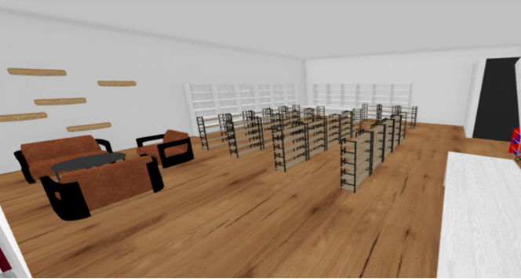
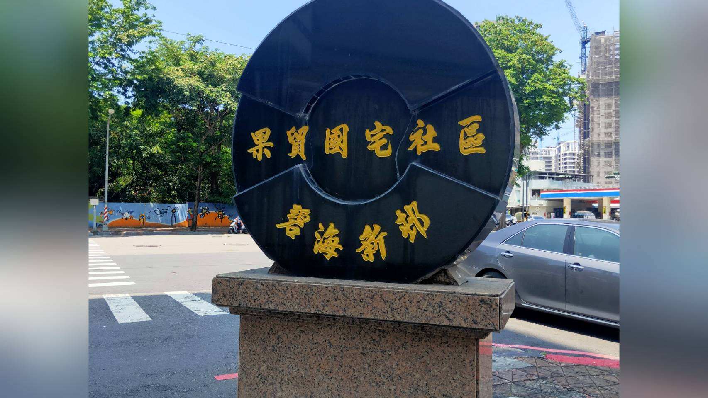

1 / 5

藥局1F擺設
2 / 5

果貿社區活動中心
3 / 5

果貿社區
本模擬藥局坐落於高雄市果貿社區內，致力於提供在地民眾能有個優良的藥事照護， 並且和政府相關單位合作，打造讓長輩安心交流的生活空間，回饋周邊居民， 同時又可免除民眾進出醫學中心舟車勞頓之苦。
"專業服務，親切至上"
本藥局的最高指導原則
本店內二樓設有眷村特色之茶室，除協助推廣茶藝文化外， 也能夠給長輩們有機會在本藥局二樓進行日常交流，更能在參與社交場合交流的同時， 能夠定期追蹤自己健康狀況，以及和藥局內專業人員交流獲得相關保健知識。
我們都真的有牌，不騙。
真的有保，相信我們。
經合法認證為C級巷弄站。